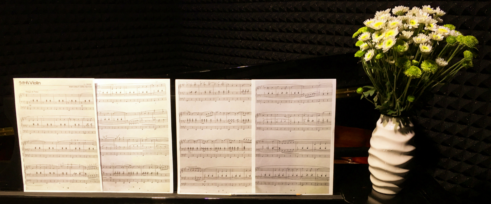

翔子的个人网站
首页
关于本站

黑夜给了我一双黑色的眼睛 我却用它来寻找光明
-顾城《一代人》
写在前面-
这个网站暂时不知道是干什么用的，就先这样放着吧。我也不知道会什么时候更新这个网页，毕竟我还是个学生，学业繁忙顾不上这个网站-但如果我有机会来看这个网站的话，我会在这里写下关于我感兴趣的一切-心情，游戏，生活。这个网站也许有一天会消失，但我希望我留在这里的记忆会一直保存下来，这个网站也会作为一个见证者，见证我一步一步的成长。(2017.2.6：本网页暂时停止更新)
故事 - 青春记忆
1.论如何与帅比相处
2.论如何与逗比相处
3.我最可爱的Memoriers们
4.和我一起长大的那些人
5.那些给过我希望的人们
6.两千多公里外的那个她
7.一个能改变宇宙的队伍
随笔 - 心情笔记
1.暂未更新
2.暂未更新
3.暂未更新
4.暂未更新
5.暂未更新
6.暂未更新
7.暂未更新
作品 - 原创故事
1.暂未更新
2.暂未更新
3.暂未更新
4.暂未更新
5.暂未更新
6.暂未更新
7.暂未更新
专辑 - 黑白心情
点击名字可以播放
弹得不好不喜勿喷
1.Sakura.mp3
2.不眠夜.mp3
3.天际.mp3
4.春水.mp3
5.回忆.mp3
Copyright(c) 2017 Xiangzi Xu,All rights reserved.